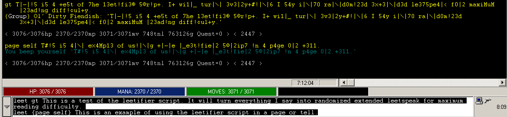
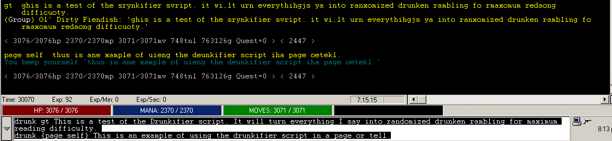

Fiendish's Speech Transmogrifier Scripts for zMUD
Tested to work in zMUD 7.21 on Windows XP. Not guaranteed to work in other versions or system configurations.
What these scripts do:
- Alters the output of your speech with humorous results.
Download the scripts here:
Leetifier (Converts all speech into randomized extended leetspeak)
Drunkifier (Makes it look like you're drunk)
How to use:
- This is an example of leetifying a gossip ---> leet gossip This is me saying something on gossip.
- This is an example of leetifying a page or tell ---> leet {page self} This is me paging myself.
- This is an example of drunkifying a gossip ---> drunk gossip This is me saying something on gossip.
- This is an example of drunkifying a page or tell ---> drunk {page self} This is me paging myself.
Examples:
Leetifier

Drunkifier
